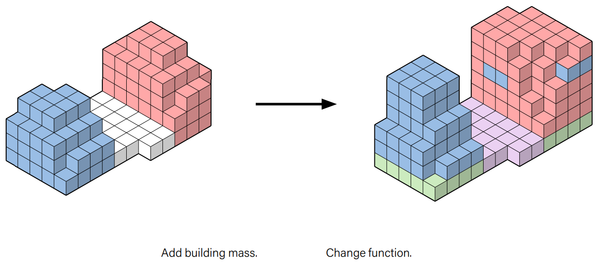
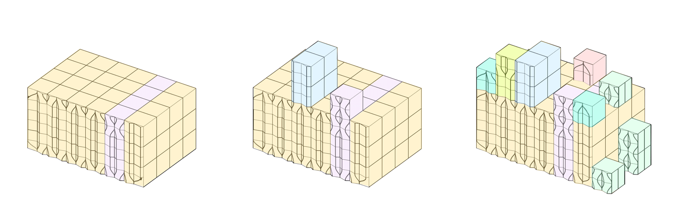
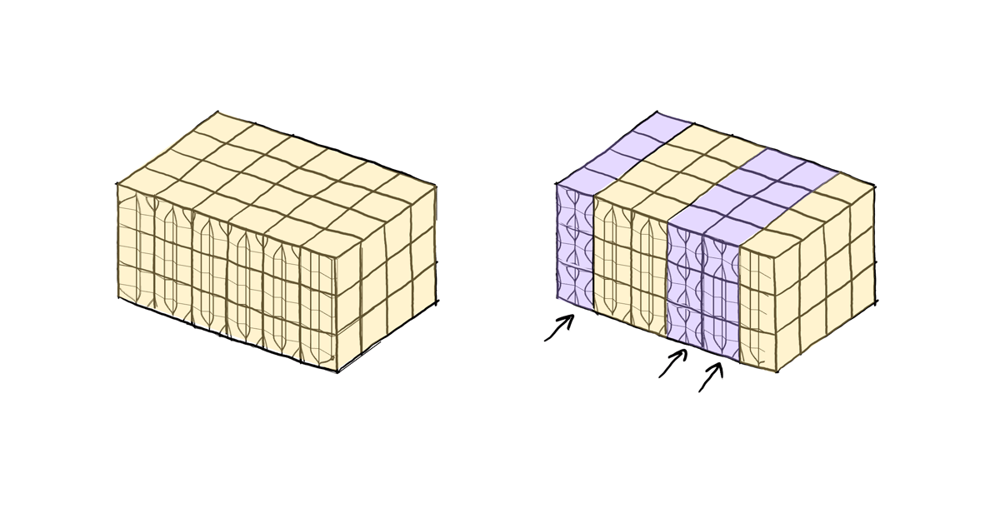

Process
Flexibility

Modularity
Keeping with our main goal of creating a sustainable and modular system, we designed individual voxels as spatial modules that can be interconnected to create spaces with different programs. We aimed for a designed which chould be easily adapted if and when the buiding had to change, meaning modules could be added or removed or their function could be easily changed. 
Modular system
The system consists of 4 parts: the permanent structure and the adaptable facade and infill.

Construction

Wooden joint

Structure and Infill

Modular interior tiles

| Pseudocode | |
|---|---|
| Input | envelope lattice, several custom tile sets |
| Output | floorplan |
| Code | The tiles are created with an underlying system similar to that often seen in tile based board games. The square voxel is subdivided in three parts along each edge. One of these subdivisions is equal to the width of a small corridor or door. These three parts are then labeled as either a door, wall or open space. By combining different tiles that match the corresponding edge types, different spaces can be created from simple tiles. By then also listing the function type of each tile, such as the entrance or kitchen (E & K), limitations and recommendations could be added to the code which tiles can connect to which tiles. Due to time limitations this is something that we have not developed yet, but could be an interesting concept for peers following this course over the following years. |
Facade tiles
The tiling system
The facade tiles are designed to tile vertically and create patterns. Whenever new modules would be added to the structure, new tiles from different tile set could be used for each new addition. This way the building facade would enrich over time. It is another way to emphasize the building’s adaptability and long lifecycle.

Tile creation

Poligonization

| Pseudocode | |
|---|---|
| Input | envelope lattice, several custom tile sets |
| Output | an .obj of a tiled facade |
| Code | Load envelope lattice
Remove interior voxels by creating a Von Neumann stencil to detect neighbours Remove voxels whose neighbour count is <=5 Extract cube lattice from envelope lattice
Export tiled facades |
Tiles voxelized envelope
 This voxelized envelope is from a previous iteration from the growth algorithm.
This voxelized envelope is from a previous iteration from the growth algorithm.